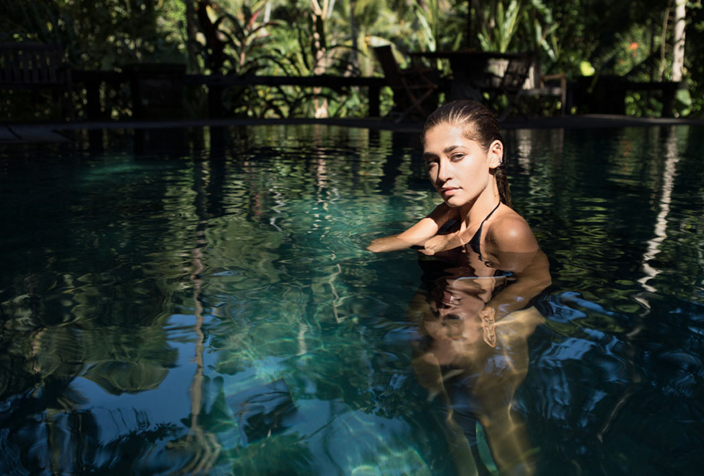
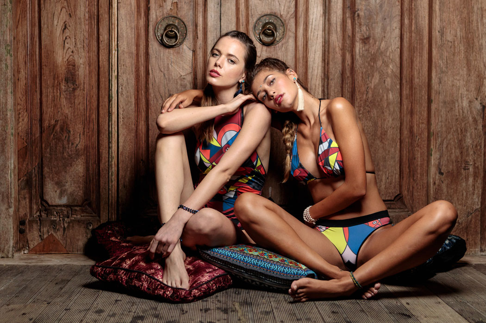

Slow Fashion Tells A Story
While each fashion season is getting faster and entire department stores are constantly filled with new goods, the prices get lower and the cupboards are getting fuller and someone or something else pay their own price for all of that. But thankfully there are always innovative people and brands, such as Melbourne swimwear label Lou Lou St Cruz who score with recycled and recyclable wonderful pieces.
If you want the world to be better then you have to do something for it. Slow fashion is more than a trend. Slow Fashion is about diversity, sustainability, respecting people, animals and nature, resourcefulness and quality. Thoughts that Taryn McLean, the designer behind the Melbourne brand Lou Lou St Cruz has put into action and therefore has become one of the emerging brands that attaches great importance not only to style but also sustainability.
After years-long experience within the fashion world, while working as a European textile buyer, she discovered the benefits of high-performance textiles and the positive impact they can have on the environment. The idea to create an eco-friendly swimwear brand was born after her daughter was born, and her passion and hard work in order to create a positive impact with her fashion just took it all from there.
“We believe strongly in the conservation of our oceans, and also of reversing the impact of human surplus wherever possible.”